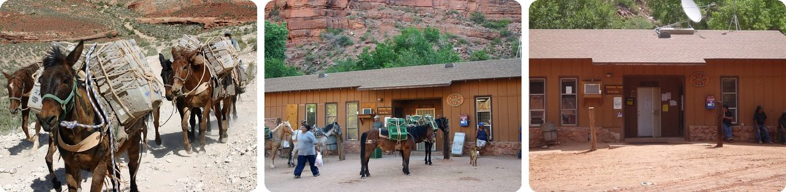
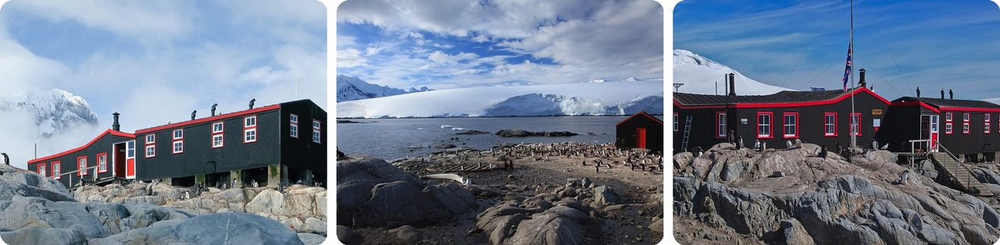

🌍 十大 奇怪的邮筒和邮政
2026年11月16日
1. 🇳🇴 挪威有一座开在海底的邮局
 在挪威南部海边的小镇里瑟尔，当地的潜水俱乐部在2004年6月4日开了一家邮局，就在水下4米。差不多是大游泳池深水区那么深。
在挪威南部海边的小镇里瑟尔，当地的潜水俱乐部在2004年6月4日开了一家邮局，就在水下4米。差不多是大游泳池深水区那么深。
它是一个玻璃钢做的潜水钟，里面充满空气，所以里面是干的。一块5吨重的配重，差不多和一头大象一样重，把它牢牢固定在海底。
一张明信片是这样到那儿的：你把它投进码头上的信箱 → 每周有几次，会潜水的邮局局长把信装进防水袋带下去 → 在那个“空气泡泡”里盖上邮戳 → 再带回水面，进入普通的邮寄流程。
这是一个得穿脚蹼才能去取信的信箱。
2. 🇫🇷 巴黎用街道下面的气压管道送信，送了118年
 从1866年到1984年，巴黎有一套气动邮政：信装在小筒里，靠空气推着在金属管道里跑。管道铺在城市的下水道里，所以不用重新挖沟，信也不用跟地面上的车一起堵着。
从1866年到1984年，巴黎有一套气动邮政：信装在小筒里，靠空气推着在金属管道里跑。管道铺在城市的下水道里，所以不用重新挖沟，信也不用跟地面上的车一起堵着。
你在一张叫“petit bleu”（小蓝条）的单子上写一句短话。气压把它“嗖”地送到离你朋友最近的那个邮局 → 再由送信员跑到他家门口。这些小筒的速度大约是每小时24公里，跟骑自行车差不多快。
1934年最大的时候，整个网络有427公里长的管道，差不多是从巴黎到伦敦的距离。1945年，它一年送了3000万条消息。
可以把它想成发短信，只不过短信是一张纸，网络是下水道。
3. 🇺🇸 美国邮政曾经用巡航导弹送过信
 1959年6月8日，美国潜艇“巴尔贝罗号”朝佛罗里达州梅波特的一个海军航空站发射了一枚天狮星巡航导弹。它的核弹头被换成了两个邮件箱，里面装着大约3,000封信。
1959年6月8日，美国潜艇“巴尔贝罗号”朝佛罗里达州梅波特的一个海军航空站发射了一枚天狮星巡航导弹。它的核弹头被换成了两个邮件箱，里面装着大约3,000封信。
22分钟后，导弹安全落地。信随后被送到杰克逊维尔邮局，像平常一样投递出去。
当时的邮政部长说，在人类登上月球之前，导弹就能在几小时内把信从纽约送到加州、英国、印度或澳大利亚。结果，“导弹邮件”只送过这一次。
这就像用烟花寄明信片，而且只成功过一次。
4. 🇪🇨 在加拉帕戈斯群岛，一个木桶当了200年的邮局
 很久以前，捕鲸船会停靠在加拉帕戈斯群岛的弗洛雷安纳岛，补充淡水和食物。从19世纪起，水手们就在一个现在叫“邮局湾”的地方放了一个木桶。
很久以前，捕鲸船会停靠在加拉帕戈斯群岛的弗洛雷安纳岛，补充淡水和食物。从19世纪起，水手们就在一个现在叫“邮局湾”的地方放了一个木桶。
要出海的船员把信丢进桶里。要回家的船就在桶里翻一翻，把顺路的信带走，大多是寄往欧洲和美国的。
今天的游客还在这么做，而且完全不用贴邮票。你留下一张明信片，再从一堆信里找一张寄到你家附近的，亲手送过去。
换句话说，下一个路过的人就是邮递员。
5. 🇺🇸 在大峡谷里，至今还是骡子在送信

苏帕伊是哈瓦苏派部落的家，就在亚利桑那州大峡谷的谷底。它离最近的公路有8英里（13公里），村里没有汽车，所以这是美国唯一一个还靠骡子送信的地方。一位司机先开一个小时，把邮件运到山路的起点。然后装到骡子背上，每头骡子最多驮200磅（90公斤），差不多一个成年人那么重，再一路走下峡谷。
这些邮件大多是吃的。新鲜食物会先放在皮奇斯普林斯邮局的大冷库里等着，那是全美国唯一一个有步入式冷库的邮局。
说白了，送货车长了四条腿和两只长耳朵。
6. 🇹🇴 汤加有个小岛，靠从船上扔下来的铁罐收信
 纽阿福欧是汤加的一座火山岛，没有深水港，大船停不下来。到1912年，岛上的人想出了“铁罐邮件”：路过的船把信封进饼干罐或煤油罐里，直接扔下海。
纽阿福欧是汤加的一座火山岛，没有深水港，大船停不下来。到1912年，岛上的人想出了“铁罐邮件”：路过的船把信封进饼干罐或煤油罐里，直接扔下海。
游泳的人游出去把罐子捞回来。他们抱着一根叫“fau”的浮木，一趟可能要游好几个小时。
1931年，一个游泳送信的人被鲨鱼咬死了，于是禁止游泳，改用独木舟。集邮的人特别喜欢这些盖了特别邮戳的信封，这座岛也因此被叫作“铁罐岛”。
这就是送货上门，只不过家在大海中间。
7. 🇺🇸 1914年，一对父母把5岁的女儿“寄”给了外婆
 1913年，美国邮局开始寄送包裹。1914年2月19日，爱达荷州格兰奇维尔的5岁女孩夏洛特·梅·皮尔斯托夫，被爸妈用这种方式寄到了刘易斯顿的外婆家，因为这样比买火车票还便宜。
1913年，美国邮局开始寄送包裹。1914年2月19日，爱达荷州格兰奇维尔的5岁女孩夏洛特·梅·皮尔斯托夫，被爸妈用这种方式寄到了刘易斯顿的外婆家，因为这样比买火车票还便宜。
梅当时重48.5磅（22公斤）。她坐在火车的邮件车厢里，外套上贴着32美分的邮票，差不多相当于今天的10美元。
一位铁路邮政员，也就是她妈妈的表亲，一路照看她，把她送到了外婆家门口。她这一趟，推动了邮局后来禁止邮寄活人。
她是一个会说话的包裹。
8. 🇦🇶 南极的邮局被企鹅团团围住

洛克罗伊港在南极半岛旁边一座小岛上，这里有世界上最南端还在营业的邮局。大家叫它“企鹅邮局”。岛的一半对游客开放，另一半留给企鹅。工作人员会数企鹅，看看这么多游客对它们有什么影响。
在五个月的邮轮季里，大约有18,000名游客上岛，寄出大约70,000件邮件。而处理这一切的，只有4个工作人员。
可以把它想成节日里很忙的邮局，只不过门外排队的是企鹅。
9. 🇳🇿 新西兰有座岛靠鸽子送信
 大屏障岛离奥克兰大约90公里。1894年，一艘船在那里失事，121人遇难，可这个消息过了好几天才传到本岛，因为每周只有一班汽船。
大屏障岛离奥克兰大约90公里。1894年，一艘船在那里失事，121人遇难，可这个消息过了好几天才传到本岛，因为每周只有一班汽船。
于是在1897年，鸽子邮政开始了。鸽子先坐每周的汽船到岛上 → 人们在每只鸽子腿上绑最多五张小纸条 → 鸽子飞回奥克兰的家。它们甚至有自己的邮票，现在集邮的人都在抢着找。
一开始，鸽子只往一个方向飞，就是飞回奥克兰。1908年，第一条电报线终于连到岛上，这项服务就结束了。
换句话说，这座岛的“网络”是长羽毛的。
10. 🇺🇸 底特律有一艘船，拥有自己的邮政编码
 J. W. 韦斯科特二号是底特律河上的一艘邮船，它是正式的邮局，拥有全美国唯一一个漂浮的邮政编码：48222。
J. W. 韦斯科特二号是底特律河上的一艘邮船，它是正式的邮局，拥有全美国唯一一个漂浮的邮政编码：48222。
路过底特律的大货船上的船员，可以收到写着自己船名、寄到这个邮编的信。小船开到大船旁边，大船一直在开，信就装在绑着绳子的桶里吊上去。
这家公司从1874年开始，当时约翰·沃德·韦斯科特船长划着小船，给路过的船送补给。到1895年，他也开始送信了。
这就是一个“得来速”窗口，只不过开过来的车是大轮船。
趣闻
铁罐岛的信封让汤加在集邮的人中间出了名，而汤加没有就此打住。1963年，它印出了世界上第一批不干胶邮票：圆形、贴金箔，做得和它的硬币一模一样。后来汤加的邮票还做成了心形、鸟形和水果形，有些大到普通信封都贴不下。这让人好奇：世界各国还印过哪些奇奇怪怪的邮票？
图片来源（Wikimedia Commons）
- #1: 20040809 UVP H undervann 3.jpg by Kristen Thorsen, CC BY-SA 3.0
- #1: 20040605 UVP Haakon sandvik stempler.jpg by Kristen Thorsen, CC BY-SA 3.0
- #1: 20040531 UVP Sjosetting 1.jpg by Kristen Thorsen, CC BY-SA 3.0
- #2: Appareil pneumatique postal Fortin-Hermann à Paris-Central en 1987.jpg by Jérome Ferri, CC BY-SA 4.0
- #2: Carte pneumatqique de 1899.jpg by Renhour48, CC0
- #2: Posta pneumatica ufficio centrale di Parigi.jpg by Unknown authorUnknown author, Public domain
- #3: Regulus Missile Mail at Naval Air Station Mayport, Florida (USA), 8 June 1959 (L55-16.2.30).jpg by unknown, Public domain
- #3: Missilemail.jpg by USPS, Public domain
- #3: Regulus I Missile Mail container (smithsonian_postal_museum) by unknown, CC0
- #4: Post office-Floreana.jpg by ProfessorX, CC BY-SA 3.0
- #4: The barrel at Post Office Bay, Floreana Island (flickr) by NH53, CC BY 2.0
- #4: The barrel at Post Office Bay (flickr) by NAParish, CC BY-SA 2.0
- #5: SupaiUSMailMules.jpg by Elf, CC BY-SA 3.0
- #5: SupaiMarket.jpg by Elf, CC BY-SA 3.0
- #5: Store / Post Office, Supai Village (flickr) by runnr_az, CC BY 2.0
- #6: Pacific Far East Line envelope for Tin Can Island mail.jpg by FAHansson, CC0
- #6: Canoe Mail.jpg by FAHansson, CC0
- #6: Satellite view of Niuafo'ou, 2005-03-19.jpg by International Space Station crew, Public domain
- #7: Uniformed Letter Carrier with Child in Mailbag.jpg by Unidentified Photographer, Public domain
- #7: Parcel Post Wagon in New Bedford, Massachusetts (2551250356).jpg by Smithsonian Institution from United States, No restrictions
- #7: Mrs. Wm. Sulzer & parcel post LCCN2014691323.jpg by Bain News Service, publisher, Public domain
- #8: Port Lockroy Antarctic Peninsula 2.jpg by Butterfly voyages - Serge Ouachée, CC BY-SA 3.0
- #8: Port Lockroy, Antarctica.jpg by Liam Quinn, CC BY-SA 2.0
- #8: Port Lockroy 20120128 144236.jpg by Rob Oo from NL, CC BY 2.0
- #9: MA I149530 TePapa Great-Barrier-Pigeongram full.jpg by Harry Wrigg, Public domain
- #9: Postduif.jpg by Patrick Edwin Moran, Public domain
- #9: Franco-British carrier ready to be released to carry a long distance message - Flickr - National Library of Scotland.jpg by National Library of Scotland from Scotland, No restrictions
- #10: J.W. Westcott II approaching freighter.jpg by Notorious4life (talk) (Uploads), CC0
- #10: J.W. Westcott II with 48222 post office.jpg by Notorious4life (talk) (Uploads), CC0
- #10: J.W. Westcott II.jpg by Sara Hattie, CC BY 2.0


,_8_June_1959_(L55-16.2.30).jpg){kind=link}


.jpg){kind=link}